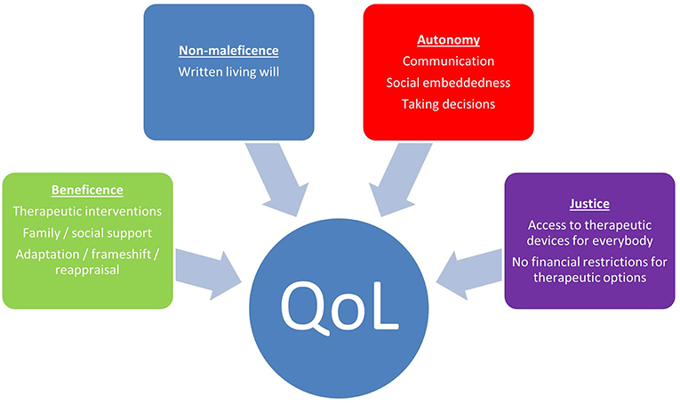
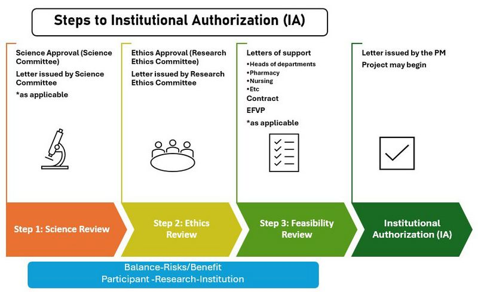
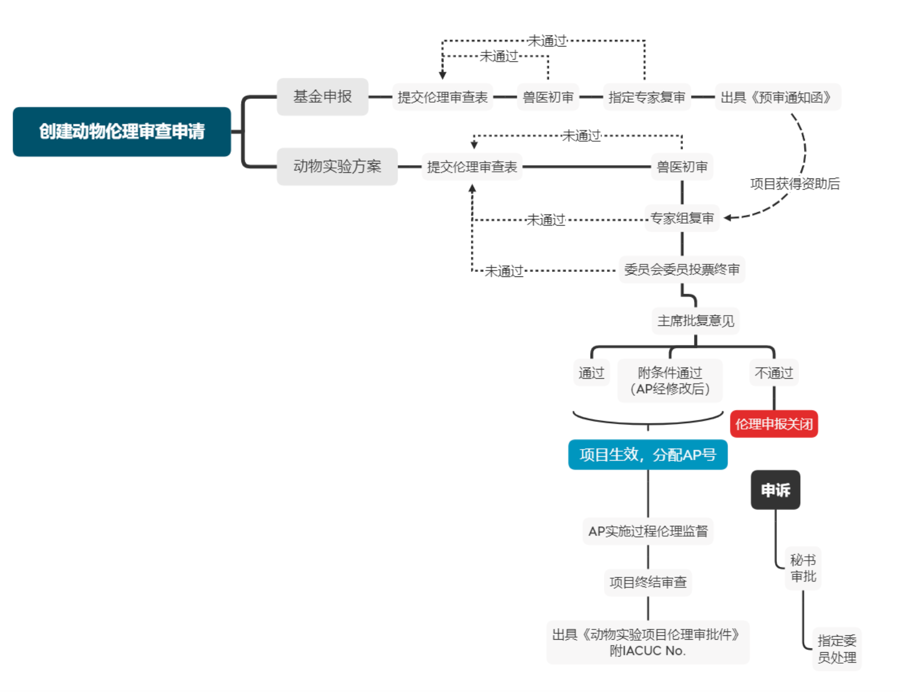
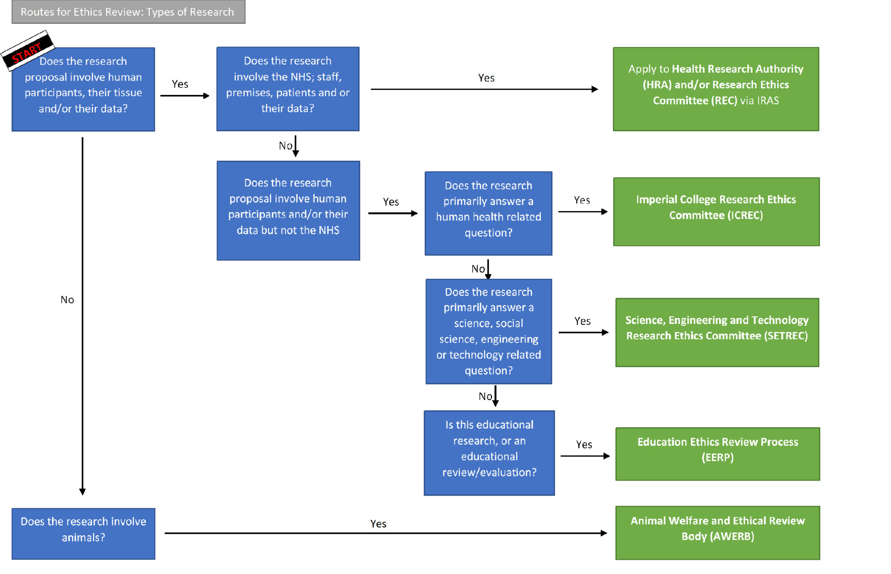
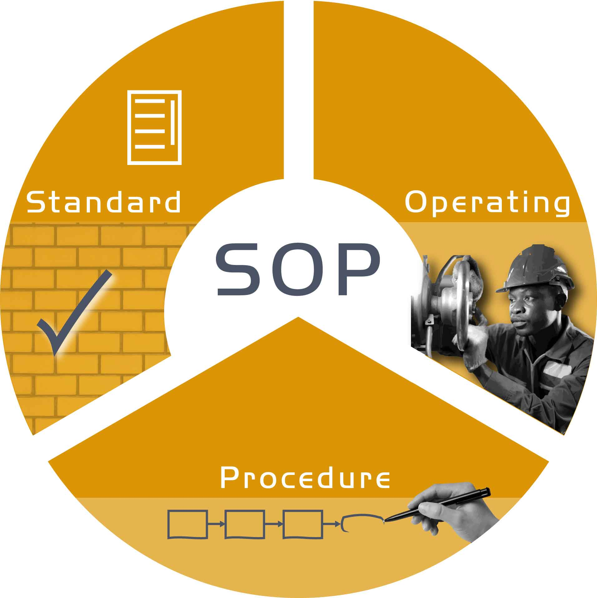
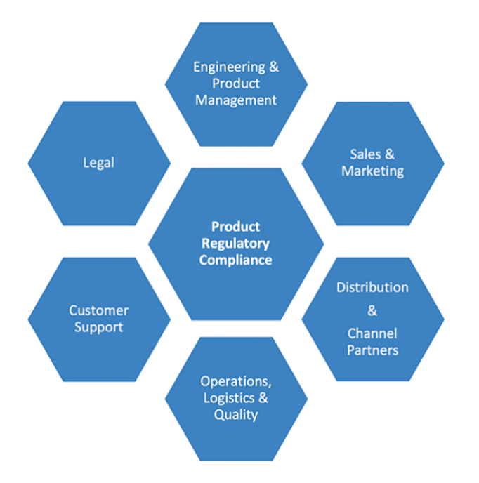
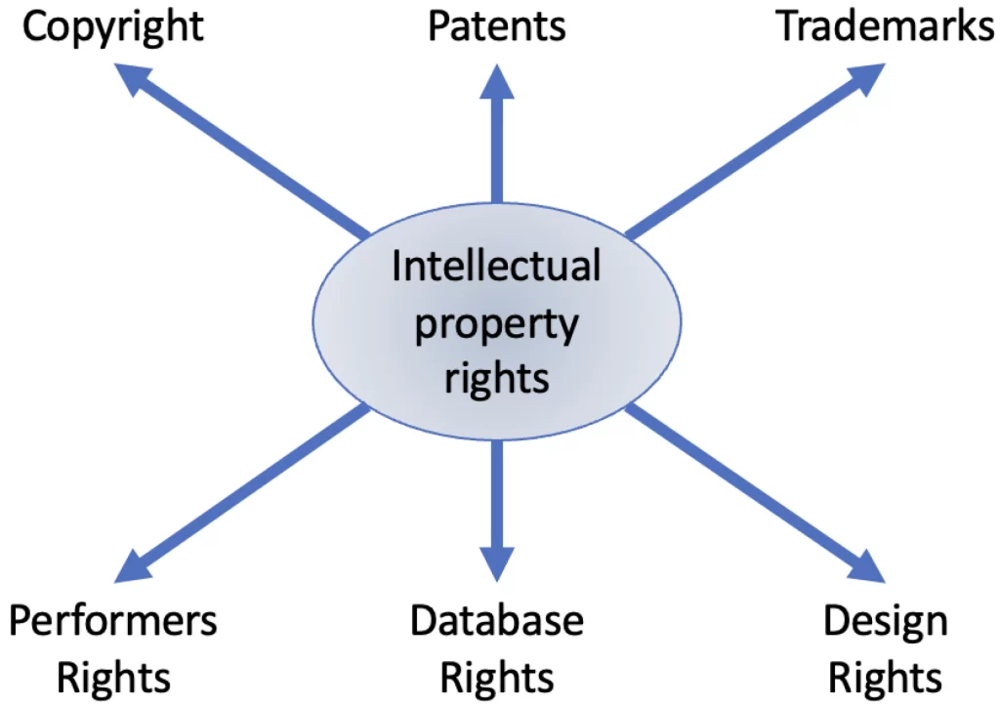

Loading...

MEDUSA's Scales
Lest in our haste, we wreck on justice's frail scale.
For every step we take in the name of preventing hair loss must be guided by the twin stars of morality and legality. Just as my stare turns men to stone, so too must we stand firm against any unethical or unlawful currents that threaten to derail our noble cause. Let us embark on this journey with caution, for the fate of our follicles and our integrity hangs in the balance.

Key Principles
The four main ethical principles, that is beneficence, non-maleficence, autonomy, and justice, are defined and explained.


Beneficence refers to the obligation to act for the benefit of others. In the context of our anti-hair loss project, it means that we are committed to developing and providing effective treatments that can truly help patients with seborrheic alopecia. This involves continuous research and improvement of the soluble microneedle technology and the formulation of drugs to ensure better curative effects. For example, we should strive to optimize the delivery efficiency of AbTAC and KGF to promote hair growth more effectively.
Nonmaleficence emphasizes the duty not to inflict harm intentionally. In the development and application of our products, we must ensure that all procedures and substances are safe. The materials used in soluble microneedles should be carefully selected and tested to avoid any potential allergic reactions or skin damage. During clinical trials, strict monitoring should be carried out to prevent any adverse effects on patients.
Autonomy respects the right of individuals to make their own decisions. In dealing with patients, we should provide them with comprehensive information about the treatment options, including the advantages and potential risks of using soluble microneedles for drug delivery. Patients should have the right to freely choose whether to accept the treatment based on their own understanding and will. Informed consent is a crucial manifestation of this principle.
Justice requires fairness and equality in the distribution of resources and benefits. In the marketization of our anti-hair loss products, we should ensure that different groups of people, regardless of their social status, economic level or geographical location, have equal access to treatment opportunities. We should also consider setting reasonable prices to make the products affordable for more people. At the same time, in research and development, we should ensure that the resources are allocated fairly to promote the progress of the project.
Ethical Review and Approval

Figure 1: Protocal of Application of Ethical Review in Zhejiang University.

Figure 1: IC's Example.
Before the experiment begins, the detailed experimental protocol must be submitted to a professional ethics committee for review. The members of the ethics committee should include medical experts, ethicists, legal experts, and community representatives, etc. The protocol should elaborate on the experimental purpose, methods, subject selection criteria, potential risks and benefits, etc. Only after obtaining the approval of the ethics committee can the experiment be carried out.
Regularly report the progress of the experiment to the ethics committee, including the recruitment situation of subjects, the occurrence and handling of adverse events, etc., and accept the continuous supervision of the ethics committee.
Protection of Subjects' Rights and Interests
Informed Consent
When recruiting subjects, sufficient, clear, and understandable information should be provided, including the purpose of the experiment, the process, possible risks (such as skin damage and infection caused by microneedles, allergic reactions, and systemic side effects that the drugs may cause, etc.), expected benefits, and the rights and obligations of the subjects. Ensure that the subjects sign the informed consent form voluntarily on the basis of fully understanding this information, and the subjects have the right to withdraw from the experiment at any time without discrimination or retaliation.
Privacy Protection
Strictly keep the personal information (such as name, age, contact information, medical history, etc.) and experimental data of the subjects confidential. Use anonymization or coding methods to process the data, and limit the access rights to the data. Only authorized researchers can access the relevant information.
Minimization of Risks
Take all reasonable measures to minimize the risks to the subjects caused by the experiment. For example, during the preparation and use of microneedles, strictly follow the aseptic operation specifications to prevent infection; accurately control the dosage of the drug to avoid adverse reactions caused by drug overdose.
Benefit Assessment
Continuously assess the potential benefits of the experiment to the subjects to ensure that the expected benefits of the experiment outweigh the risks. If new risks or potential serious adverse events are found during the experiment, timely measures should be taken to protect the subjects, and a decision on whether to continue the experiment should be made according to the situation.
Experimental Operation Specifications
Comply with Standard Operating Procedures (SOPs)

Develop detailed SOPs for the experiment, covering all aspects such as the preparation of microneedles, the loading of drugs, the administration operation on experimental animals or humans, and the collection and processing of samples. All researchers must strictly operate in accordance with the SOPs to ensure the accuracy and reproducibility of the experimental results.
Qualifications and Training
The researchers participating in the experiment should possess corresponding qualifications and skills, such as a medical background and experimental operation skills. Before the experiment begins, conduct training for all researchers, including the interpretation of the experimental protocol, the training of operation skills, and the training of ethical and legal knowledge, etc., to ensure that they are familiar with the experimental process and requirements.
Data Recording and Preservation
Accurately and completely record all data during the experimental process, including experimental design, operation steps, observation results, data processing, etc. Establish a standardized data preservation system to ensure the long-term traceability of the data for subsequent review and verification.
Product Safety and Regulatory Compliance

Assessment of Drug Safety and Efficacy
Conduct rigorous safety and efficacy tests on the drugs used for the treatment of seborrheic alopecia. Complete all stages of pre-clinical research and clinical trials in accordance with the requirements of the drug regulatory authorities. For example, for drug components such as AbTAC and KGF, verify their effectiveness in promoting hair growth and treating seborrheic alopecia through a large number of animal experiments and human clinical trials. At the same time, evaluate their short-term and long-term safety, including potential impacts on other organ systems of the body.
Safety and Quality Control of Microneedle Materials
As a carrier for drug delivery, the materials of soluble microneedles must meet strict biocompatibility standards. Carry out comprehensive toxicological tests on the microneedle materials to ensure that they will not cause allergies, inflammation, or other adverse reactions during human use. Establish a strict quality control system to ensure that each batch of microneedles is consistent in terms of size, shape, dissolution characteristics, etc., so as to ensure the accurate delivery of drugs.
ntellectual Property and Data Privacy

Patent and Intellectual Property Protection
Timely apply for patent protection for core innovative aspects such as the soluble microneedle delivery technology and drug formulations. Through patent applications, establish the company's intellectual property rights in terms of technology and products to prevent infringement by competitors. At the same time, conduct regular patent searches and analyses to understand the intellectual property dynamics within the industry and ensure that the company's research and development and production activities do not infringe on the patents of others.
Data Management and Privacy Protection
During the product research and development and clinical trial processes, a large amount of patient data, such as personal information, medical history, treatment effects, etc., will be collected. Establish a sound data management and privacy protection system, and adopt measures such as encryption technology and access rights control to ensure the secure storage and transmission of data. When using patient data for research and analysis, follow the principles of legality, legitimacy, and necessity, obtain the explicit authorization of patients, and anonymize the data to protect patient privacy.